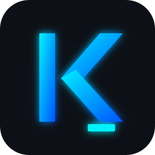

A high-integrity, local-first terminal AI agent engineered for autonomous software engineering and systems administration.
Not a wrapper. A control plane.
Built on one principle: the model should be powerful, but the environment should be safe.
AST gating rejects broken code before it touches disk. Diff gating requires explicit approval for every change. Dangerous commands are hard-blocked.
Branch your conversation context like Git. Fork experiments, checkout previous states, undo mistakes. Every path saved as portable JSON.
Thread-safe auditing maps exactly why the model executed specific tools. Persistent reasoning logs anchored to each interaction.
Toggle between Plan (read-only advisory) and Execute (autonomous code writing). Context compaction at 80% token threshold.
Built-in hooks for Model Context Protocol. Pull in external tools, infrastructure tracking, or search APIs.
After 3 consecutive tool failures, Kyrex aborts to prevent infinite reasoning loops. Maximum 10 nested tool-call rounds.
Bring your own API key. Works with any OpenAI-compatible endpoint.
GPT-4o, GPT-4, o1, o3-mini
Claude 3.5 Sonnet, Claude 3 Opus
Any OpenAI-compatible API
No changes land silently. Every file modification is staged and requires explicit human approval.
Kyrex opens a unified diff preview. You see exactly what changes before they're applied.
For high-confidence workflows. Auto-accept edits after a brief review window.
Kyrex suggests a change
Review the diff
Change applied
Enable in VS Code settings: kyrex.trustMode: true
Your API keys, your models, your infrastructure. No vendor lock-in.
Use your own API keys directly. No middleman, no markup, no data collection.
Switch between GPT-4o, Claude, or any OpenAI-compatible endpoint on the fly.
Runs entirely on your machine. Sessions stored locally as portable JSON.
Point to Azure OpenAI, local LLMs, or any compatible API with custom base URLs.
One command. Linux/WSL.
curl -fsSL https://raw.githubusercontent.com/kp84-hub/kyrex/main/install.sh | bash
Or install manually:
# Clone and install
git clone https://github.com/kp84-hub/kyrex.git
cd kyrex
pip install -e kyrex_engine/
go build -o kx .
sudo cp kx /usr/local/bin/kx
# Configure and launch
kx --setup
kx
Requirements: Go 1.21+, Python 3.11+